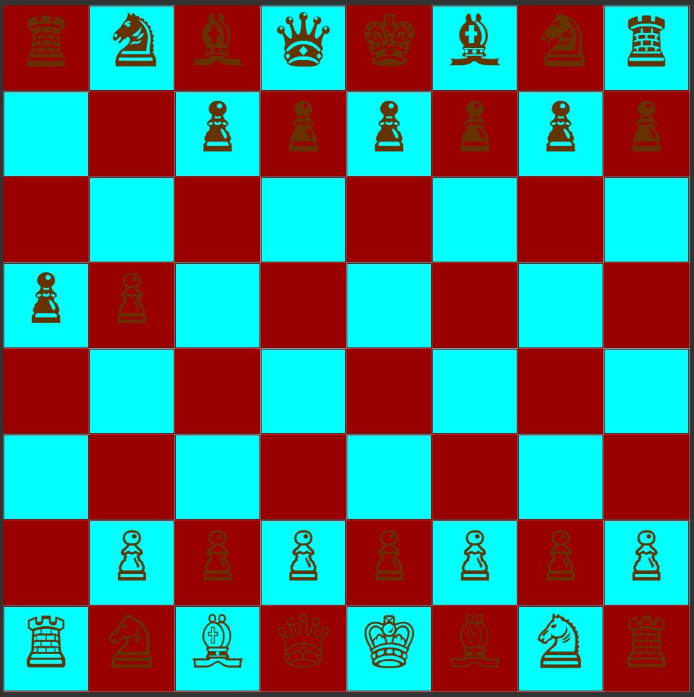
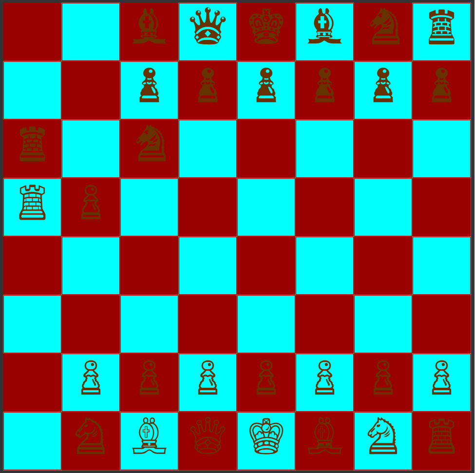
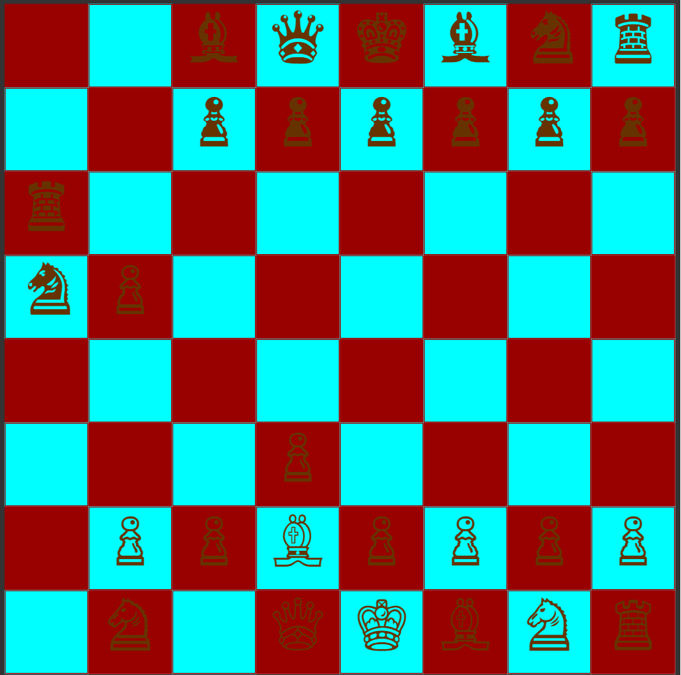
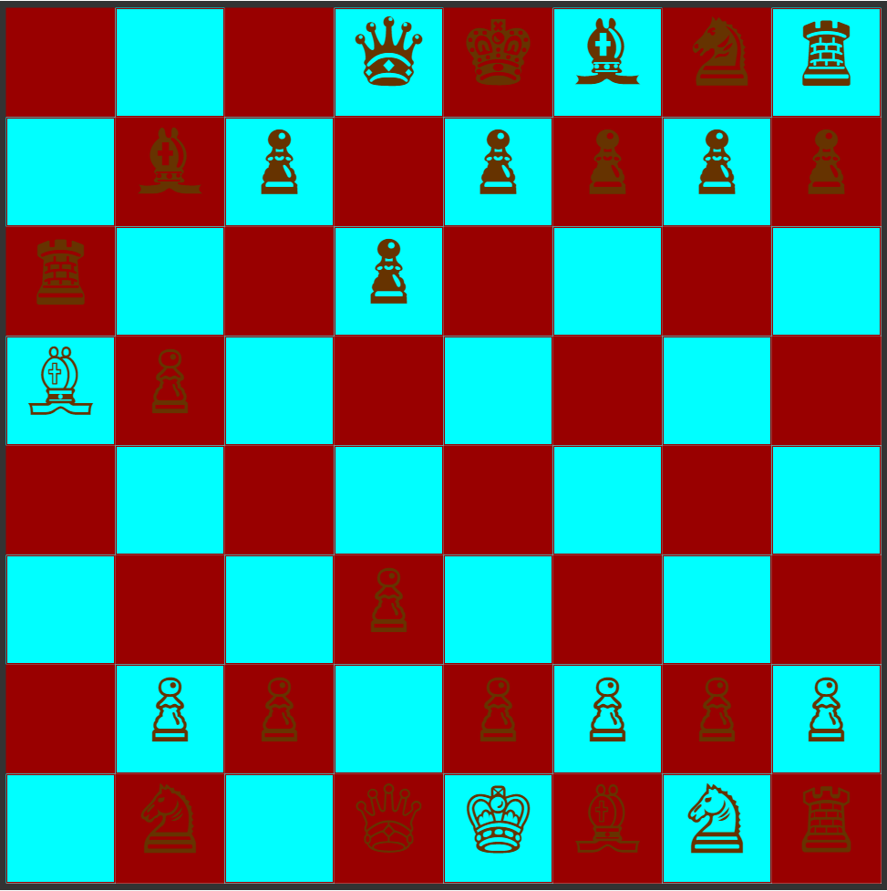
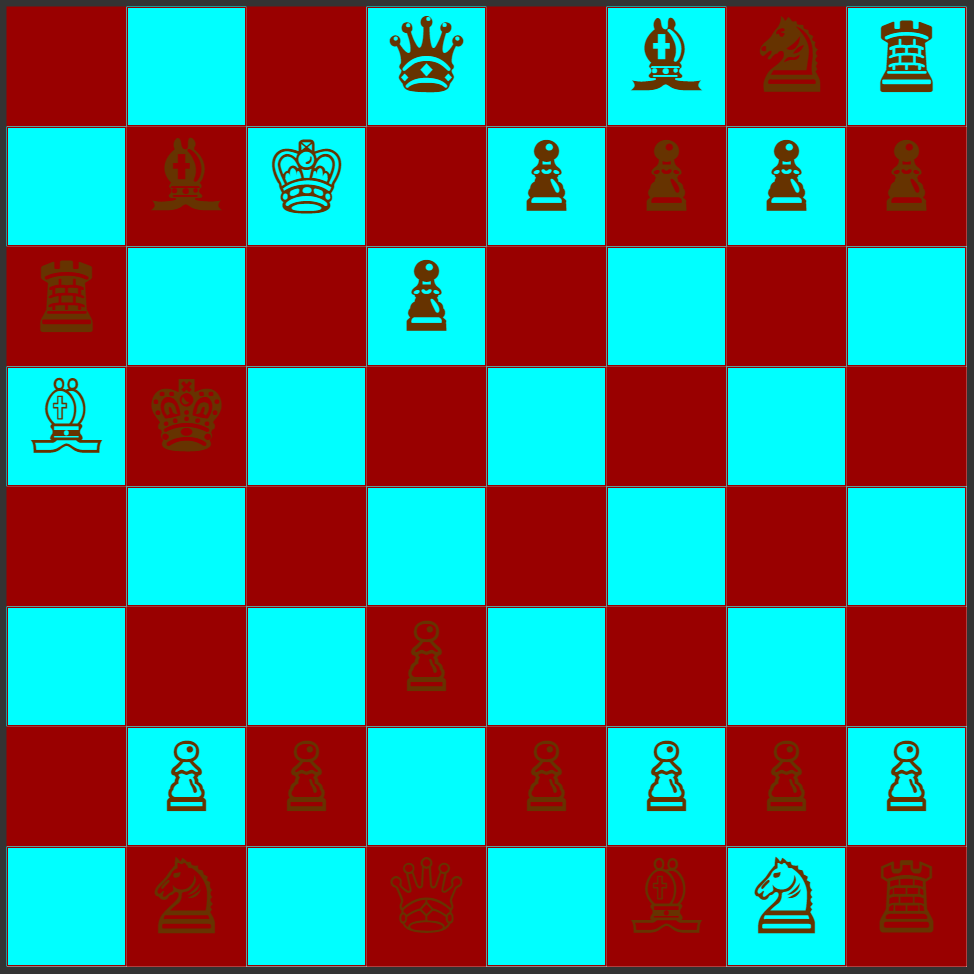

Normally a pawn moves by advancing a single square, but the first time a pawn is moved, it has the option of advancing two squares. Pawns may not use the initial two-square advance to jump over an occupied square, or to capture. Any piece directly in front of a pawn, friend or foe, blocks its advance. Unlike other pieces, the pawn does not capture in the same direction as it otherwise moves. A pawn captures diagonally, one square forward and to the left or right.
These chess pieces move straight up, down, left, and right, and can move any number of spaces. They cannot move along the diagonals of the chessboard.
These chess pieces have the unique trait of being able to 'leap' over other chess pieces. They move in an "L" shape. If they land on an opposing chess piece, it is captured.
These chess pieces move along the diagonals of the chessboard. This means that the Bishop is bound to the color square it starts on. One Bishop starts on a white square, and one starts on a black square. They can move any number of spaces on the diagonals.
The Queen can move in any direction. However, she is not limited to just one space - she can move any number of spaces in any direction.
The King can move one space in any direction. He can never move in to "check", where he is threatened by another piece. This means the king can never be in the space adjacent to the opposing King.